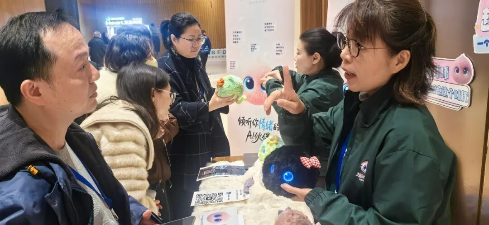

中美精神⼼理研究所教授、超个⼈⼼理学及⼼理治疗专家张宝蕊博⼠（右⼀），了解超级球球项⽬，并与超级有爱智能科技销售总监⾼丽春合影同时，作为将⼈⼯智能技术应⽤于情绪疗愈的新产品，超级球球也吸引了众多参会者了解、体验。
超级有爱智能科技创始⼈元晓帅博⼠（右⼆）与销售总监⾼丽春向参会专家、咨询师介绍超级球球“超级球球”的核⼼功能，是通过聊天帮助⽤⼾纾解负⾯情绪，所以其在对话中给予⽤⼾共情回应、引导的能⼒，格外受到专家、咨询师们的关注。
有咨询师在体验后，认为球球的回复确实遵循着⼼理学⽅法，肯定了球球在纾解情绪⽅⾯的作⽤。也有不少咨询师表达了深⼊探讨合作的意愿。
本次年会上来⾃⼀线专家与咨询师们的积极反馈，不仅是对“超级球球”产品理念的⼀次有⼒验证，也让我们更加确信，⼈⼯智能技术与专业⼼理学的深度融合，是通往普惠化、个性化⼼理健康服务的关键路径。
未来，我们将继续深化与⼼理学界、科研机构的合作，让“超级球球”不仅是⼀个有温度的AI伙伴，更能成为专业⼈⼠信赖的得⼒助⼿。
